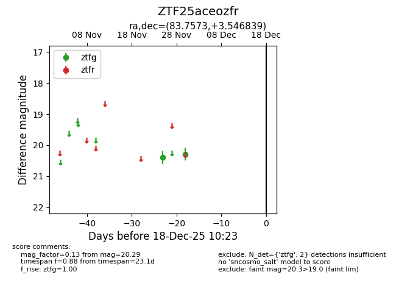
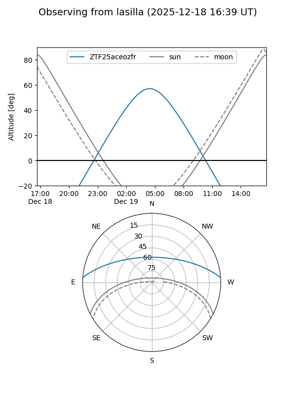
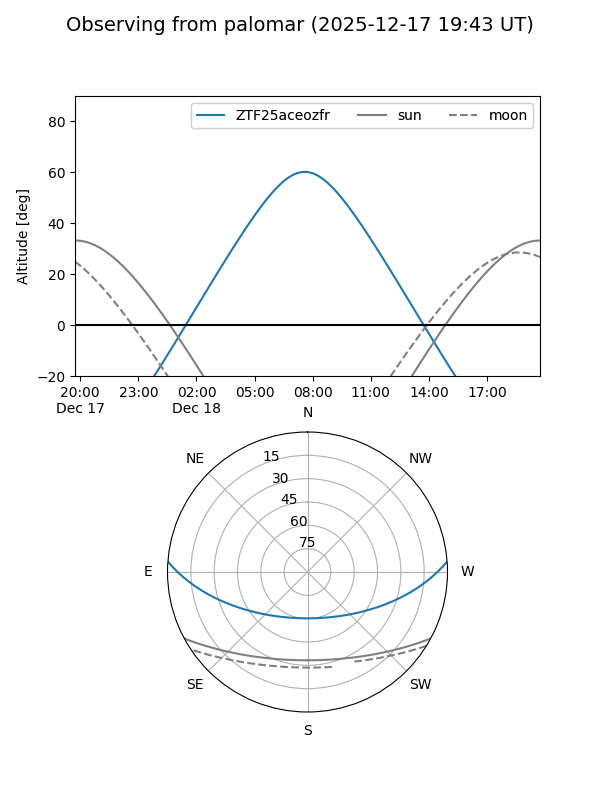

ZTF25aceozfr
Target ZTF25aceozfr at 2025-12-18 11:17
Aliases and brokers:
FINK: fink-portal.org/ZTF25aceozfr
Lasair: lasair-ztf.lsst.ac.uk/objects/ZTF25aceozfr
ALeRCE: alerce.online/object/ZTF25aceozfr
alt names
ZTF25aceozfr (ztf,fink_ztf)
Coordinates:
equatorial (ra, dec) = 83.7573,+3.54684
equatorial (HMS+DMS) = 05:35:01.75,+03:32:48.62
galactic (l, b) = (200.7270,-15.21756)
Photometry
last ztfg=20.29
2 ztfg detections
Lightcurve

Visibility


Additional plots